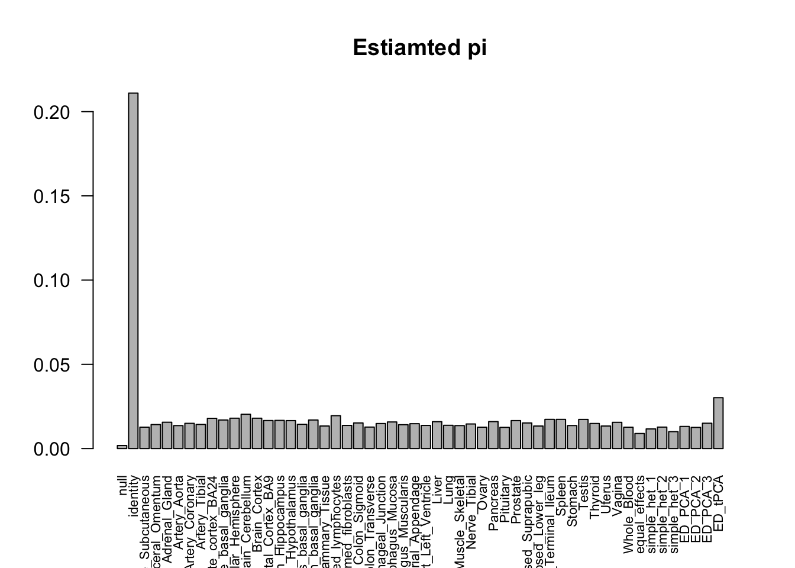
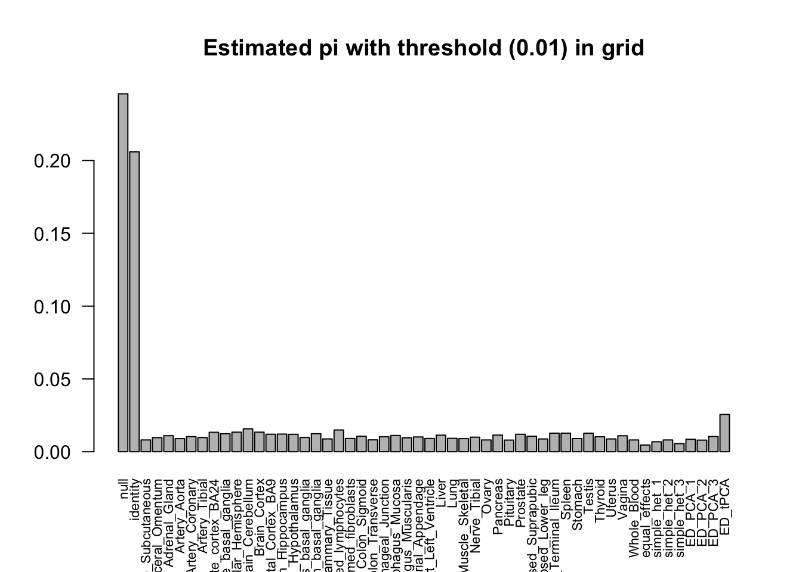

Last updated: 2018-08-30
workflowr checks: (Click a bullet for more information) ✔ R Markdown file: up-to-date
Great! Since the R Markdown file has been committed to the Git repository, you know the exact version of the code that produced these results.
✔ Environment: empty
Great job! The global environment was empty. Objects defined in the global environment can affect the analysis in your R Markdown file in unknown ways. For reproduciblity it’s best to always run the code in an empty environment.
✔ Seed:
set.seed(1)
The command set.seed(1) was run prior to running the code in the R Markdown file. Setting a seed ensures that any results that rely on randomness, e.g. subsampling or permutations, are reproducible.
✔ Session information: recorded
Great job! Recording the operating system, R version, and package versions is critical for reproducibility.
✔ Repository version: 2b58dca
wflow_publish or wflow_git_commit). workflowr only checks the R Markdown file, but you know if there are other scripts or data files that it depends on. Below is the status of the Git repository when the results were generated:
Ignored files:
Ignored: .DS_Store
Ignored: .Rhistory
Ignored: .Rproj.user/
Ignored: analysis/.DS_Store
Ignored: analysis/.Rhistory
Ignored: analysis/include/.DS_Store
Ignored: code/.DS_Store
Ignored: data/.DS_Store
Ignored: docs/.DS_Store
Ignored: output/.DS_Store
Untracked files:
Untracked: analysis/Classify.Rmd
Untracked: analysis/EstimateCorMaxEM.Rmd
Untracked: analysis/EstimateCorMaxEMGD.Rmd
Untracked: analysis/EstimateCorOptimEM.Rmd
Untracked: analysis/EstimateCorPrior.Rmd
Untracked: analysis/EstimateCorSol.Rmd
Untracked: analysis/HierarchicalFlashSim.Rmd
Untracked: analysis/MashLowSignalGTEx.Rmd
Untracked: analysis/MashLowSignalGTExPerm.Rmd
Untracked: analysis/MashLowSignalIndex.Rmd
Untracked: analysis/Mash_GTEx.Rmd
Untracked: analysis/MeanAsh.Rmd
Untracked: analysis/OutlierDetection.Rmd
Untracked: analysis/OutlierDetection2.Rmd
Untracked: analysis/OutlierDetection3.Rmd
Untracked: analysis/OutlierDetection4.Rmd
Untracked: analysis/Test.Rmd
Untracked: analysis/mash_missing_row.Rmd
Untracked: code/GTExNullModel.R
Untracked: code/MashClassify.R
Untracked: code/MashCorResult.R
Untracked: code/MashNULLCorResult.R
Untracked: code/MashSource.R
Untracked: code/Weight_plot.R
Untracked: code/addemV.R
Untracked: code/estimate_cor.R
Untracked: code/generateDataV.R
Untracked: code/johnprocess.R
Untracked: code/sim_mean_sig.R
Untracked: code/summary.R
Untracked: data/Blischak_et_al_2015/
Untracked: data/scale_data.rds
Untracked: docs/figure/Classify.Rmd/
Untracked: docs/figure/MashLowSignalGTEx.Rmd/
Untracked: docs/figure/MashLowSignalGTExPerm.Rmd/
Untracked: docs/figure/OutlierDetection.Rmd/
Untracked: docs/figure/OutlierDetection2.Rmd/
Untracked: docs/figure/OutlierDetection3.Rmd/
Untracked: docs/figure/Test.Rmd/
Untracked: docs/figure/mash_missing_whole_row_5.Rmd/
Untracked: docs/include/
Untracked: output/AddEMV/
Untracked: output/CovED_UKBio_strong.rds
Untracked: output/CovED_UKBio_strong_Z.rds
Untracked: output/Flash_UKBio_strong.rds
Untracked: output/GTExNULLres/
Untracked: output/GTEx_2.5_nullData.rds
Untracked: output/GTEx_2.5_nullModel.rds
Untracked: output/GTEx_2.5_nullPermData.rds
Untracked: output/GTEx_2.5_nullPermModel.rds
Untracked: output/GTEx_3.5_nullData.rds
Untracked: output/GTEx_3.5_nullModel.rds
Untracked: output/GTEx_3.5_nullPermData.rds
Untracked: output/GTEx_3.5_nullPermModel.rds
Untracked: output/GTEx_3_nullData.rds
Untracked: output/GTEx_3_nullModel.rds
Untracked: output/GTEx_3_nullPermData.rds
Untracked: output/GTEx_3_nullPermModel.rds
Untracked: output/GTEx_4.5_nullData.rds
Untracked: output/GTEx_4.5_nullModel.rds
Untracked: output/GTEx_4.5_nullPermData.rds
Untracked: output/GTEx_4.5_nullPermModel.rds
Untracked: output/GTEx_4_nullData.rds
Untracked: output/GTEx_4_nullModel.rds
Untracked: output/GTEx_4_nullPermData.rds
Untracked: output/GTEx_4_nullPermModel.rds
Untracked: output/MASH.10.em2.result.rds
Untracked: output/MASH.10.mle.result.rds
Untracked: output/MASHNULL.V.result.1.rds
Untracked: output/MASHNULL.V.result.10.rds
Untracked: output/MASHNULL.V.result.11.rds
Untracked: output/MASHNULL.V.result.12.rds
Untracked: output/MASHNULL.V.result.13.rds
Untracked: output/MASHNULL.V.result.14.rds
Untracked: output/MASHNULL.V.result.15.rds
Untracked: output/MASHNULL.V.result.16.rds
Untracked: output/MASHNULL.V.result.17.rds
Untracked: output/MASHNULL.V.result.18.rds
Untracked: output/MASHNULL.V.result.19.rds
Untracked: output/MASHNULL.V.result.2.rds
Untracked: output/MASHNULL.V.result.20.rds
Untracked: output/MASHNULL.V.result.3.rds
Untracked: output/MASHNULL.V.result.4.rds
Untracked: output/MASHNULL.V.result.5.rds
Untracked: output/MASHNULL.V.result.6.rds
Untracked: output/MASHNULL.V.result.7.rds
Untracked: output/MASHNULL.V.result.8.rds
Untracked: output/MASHNULL.V.result.9.rds
Untracked: output/MashCorSim--midway/
Untracked: output/Mash_EE_Cov_0_plusR1.rds
Untracked: output/UKBio_mash_model.rds
Unstaged changes:
Modified: analysis/Mash_UKBio.Rmd
Modified: analysis/mash_missing_samplesize.Rmd
Modified: output/Flash_T2_0.rds
Modified: output/Flash_T2_0_mclust.rds
Modified: output/Mash_model_0_plusR1.rds
Modified: output/PresiAddVarCol.rds
| File | Version | Author | Date | Message |
|---|---|---|---|---|
| Rmd | 2b58dca | zouyuxin | 2018-08-30 | wflow_publish(“analysis/MashLowSignalGTEx3.5.Rmd”) |
| html | a36b08e | zouyuxin | 2018-08-30 | Build site. |
| Rmd | 5dfd60c | zouyuxin | 2018-08-30 | wflow_publish(“analysis/MashLowSignalGTEx3.5.Rmd”) |
| html | e9f5a34 | zouyuxin | 2018-08-30 | Build site. |
| Rmd | 8cb0635 | zouyuxin | 2018-08-30 | wflow_publish(“analysis/MashLowSignalGTEx3.5.Rmd”) |
library(mashr)Loading required package: ashrlibrary(knitr)
library(kableExtra)get_estimated_pi = function(m, dimension = c("cov", "grid", "all"), thres = NULL){
dimension = match.arg(dimension)
if (dimension == "all") {
get_estimated_pi_no_collapse(m)
}
else {
g = get_fitted_g(m)
pihat = g$pi
pihat_names = NULL
pi_null = NULL
if (g$usepointmass) {
pihat_names = c("null", pihat_names)
pi_null = pihat[1]
pihat = pihat[-1]
}
pihat = matrix(pihat, nrow = length(g$Ulist))
if(!is.null(thres)){
pi_null = sum(pihat[, g$grid <= thres]) + pi_null
pihat = pihat[, g$grid > thres]
}
if (dimension == "cov"){
pihat = rowSums(pihat)
pihat_names = c(pihat_names, names(g$Ulist))
}
else if (dimension == "grid") {
pihat = colSums(pihat)
pihat_names = c(pihat_names, 1:length(g$grid))
}
pihat = c(pi_null, pihat)
names(pihat) = pihat_names
return(pihat)
}
}There are two random sets in the GTEx summary data set. Using qvalues 0.05 as the threshold, the corresponding non-significant |z| value is around 3.1. Since lfsr and lfdr are both more conservative than q values, we select the samples with \(\max_{r} |Z_{jr}| < 3.5\) from each data set as the null set. We estimate data driven covariance matrices from data 1, estimate noise correlation from data 2, fit mash model on data 2 and calculate posterior on data 1.
data = readRDS('../output/GTEx_3.5_nullData.rds')
model = readRDS('../output/GTEx_3.5_nullModel.rds')Sample size:
samplesize = matrix(c(nrow(data$m.data1.null$Bhat), nrow(data$m.data2.null$Bhat)))
row.names(samplesize) = c('data 1', 'data 2')
samplesize %>% kable() %>% kable_styling()| data 1 | 18189 |
| data 2 | 25718 |
barplot(get_estimated_pi(model), las=2, cex.names = 0.7)| Version | Author | Date |
|---|---|---|
| e9f5a34 | zouyuxin | 2018-08-30 |
The estimated weights \(\hat{\pi}\) on null part is not large. The weight on the other covariance structures may concentrate on the small grid (small \(\omega_{l}\)). So they are very close to null, but we cannot view it in the plot. I modified the get_estimated_pi function to have a threshold for grid. The weights for the grid less than the threshold are merged into null part.
barplot(get_estimated_pi(model, thres = 0.01), las=2, cex.names = 0.7)| Version | Author | Date |
|---|---|---|
| e9f5a34 | zouyuxin | 2018-08-30 |
The correlation for the ED_tPCA is
corrplot::corrplot(cov2cor(model$fitted_g$Ulist[['ED_tPCA']]))| Version | Author | Date |
|---|---|---|
| e9f5a34 | zouyuxin | 2018-08-30 |
There are 483 significant samples in data 1.
data = readRDS('../output/GTEx_3.5_nullPermData.rds')
model = readRDS('../output/GTEx_3.5_nullPermModel.rds')Sample size:
samplesize = matrix(c(nrow(data$m.data1.p.null$Bhat), nrow(data$m.data2.p.null$Bhat)))
row.names(samplesize) = c('data 1', 'data 2')
samplesize %>% kable() %>% kable_styling()| data 1 | 18189 |
| data 2 | 25718 |
barplot(get_estimated_pi(model), las=2, cex.names = 0.7)
| Version | Author | Date |
|---|---|---|
| e9f5a34 | zouyuxin | 2018-08-30 |
barplot(get_estimated_pi(model, thres = 0.01), las=2, cex.names = 0.7)
| Version | Author | Date |
|---|---|---|
| e9f5a34 | zouyuxin | 2018-08-30 |
There are 44 significant samples in data 1.
There is no overfitting issue.
sessionInfo()R version 3.5.1 (2018-07-02)
Platform: x86_64-apple-darwin15.6.0 (64-bit)
Running under: macOS High Sierra 10.13.6
Matrix products: default
BLAS: /Library/Frameworks/R.framework/Versions/3.5/Resources/lib/libRblas.0.dylib
LAPACK: /Library/Frameworks/R.framework/Versions/3.5/Resources/lib/libRlapack.dylib
locale:
[1] en_US.UTF-8/en_US.UTF-8/en_US.UTF-8/C/en_US.UTF-8/en_US.UTF-8
attached base packages:
[1] stats graphics grDevices utils datasets methods base
other attached packages:
[1] kableExtra_0.9.0 knitr_1.20 mashr_0.2-11 ashr_2.2-10
loaded via a namespace (and not attached):
[1] Rcpp_0.12.18 highr_0.7 pillar_1.3.0
[4] compiler_3.5.1 git2r_0.23.0 plyr_1.8.4
[7] workflowr_1.1.1 R.methodsS3_1.7.1 R.utils_2.6.0
[10] iterators_1.0.10 tools_3.5.1 corrplot_0.84
[13] digest_0.6.15 viridisLite_0.3.0 tibble_1.4.2
[16] evaluate_0.11 lattice_0.20-35 pkgconfig_2.0.2
[19] rlang_0.2.2 Matrix_1.2-14 foreach_1.4.4
[22] rstudioapi_0.7 yaml_2.2.0 parallel_3.5.1
[25] mvtnorm_1.0-8 xml2_1.2.0 httr_1.3.1
[28] stringr_1.3.1 hms_0.4.2 rprojroot_1.3-2
[31] grid_3.5.1 R6_2.2.2 rmarkdown_1.10
[34] rmeta_3.0 readr_1.1.1 magrittr_1.5
[37] whisker_0.3-2 scales_1.0.0 backports_1.1.2
[40] codetools_0.2-15 htmltools_0.3.6 MASS_7.3-50
[43] rvest_0.3.2 assertthat_0.2.0 colorspace_1.3-2
[46] stringi_1.2.4 munsell_0.5.0 doParallel_1.0.11
[49] pscl_1.5.2 truncnorm_1.0-8 SQUAREM_2017.10-1
[52] crayon_1.3.4 R.oo_1.22.0 This reproducible R Markdown analysis was created with workflowr 1.1.1